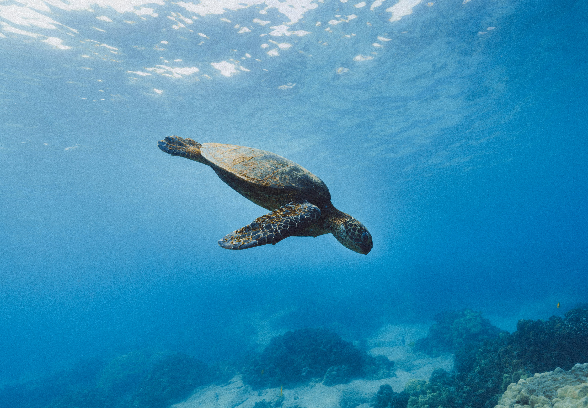

Most visitors come to Taniti to relax on its golden beaches, explore lush rainforests, and experience the awe-inspiring volcano. These natural attractions provide both adventure and tranquility for all types of travelers.
Merriton Landing, a rapidly developing area on the north side of Yellow Leaf Bay, is quickly becoming the hub for entertainment on the island. Here you can find pubs, a microbrewery, art galleries, and several nightlife options including a new dance club.
For adventure seekers, Taniti offers chartered fishing tours, snorkeling in vibrant coral reefs, zip-lining through the rainforest canopy, and even helicopter rides over the island. A nine-hole golf course is also scheduled to open next year for those who want a leisurely outdoor challenge.
Families and casual travelers can enjoy movies at the local cinema, play at arcades, or go bowling. The island offers activities suitable for all ages, ensuring that everyone finds something fun to do.
Taniti also has a rich cultural scene. Visitors can explore local history at the museum, attend art exhibitions, and experience traditional performances that celebrate the island’s heritage.